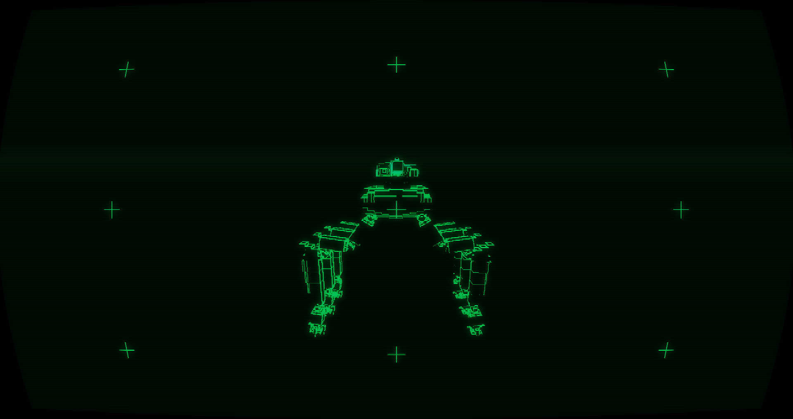
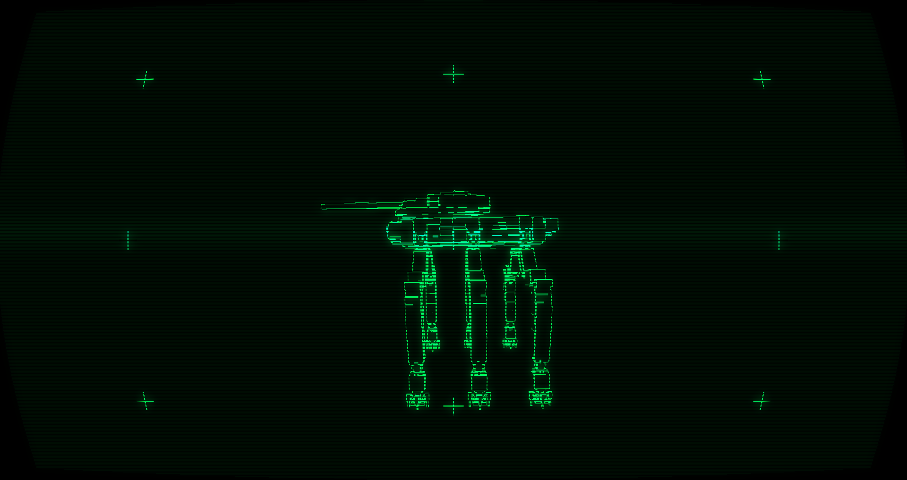
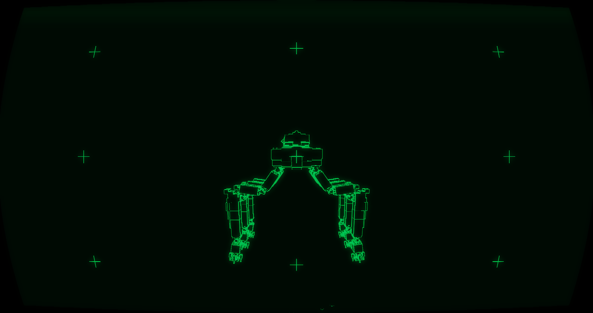

> TAIPAN-63 // MEDIUM_STANDARD
КОМПОНОВКА: 3-ая компоновка разработки "Taipan"
Основные характеристики:
> Класс: Средний основной танк.
> Внесение в компоновку: 3-я. Инженеры переставили топливный бак в привычное для последующих компоновок место (в корму за башней). Автомат заряжания AL-1 был доработан до версии AL-2, которая стала стандартом для всего проекта.
> Особенности: Улучшенные характеристики брони, а также практически идентичный корпус Taipan-62 с соблюдением характерной ромбовидной формы проекта "Taipan".
> Вооружение: Большой-средний калибр (основной). Отлично работает на средних и дальних дистанциях. Автомат заряжания (до 2 секунд) позволяет вести непрерывный огонь.
> Статус: Массовое производство. Надежная и полюбившаяся пилотам компоновка.
Отчёт 2-ой испытательной бригады:
«63-й — это стандарт. Ты чувствуешь себя уверенно и гордо.
Пушка бьет больно, броня держит, автомат заряжания позволяет не отвлекаться на перезарядку.
Он не такой быстрый, как его предшественники, но с 63-м ты реально воюешь, а не просто бегаешь».
— Оператор-102, 2-я испытательная бригада.
Тактика применения:
Основная ударная сила. Используется для прорыва обороны, поддержки пехоты и уничтожения техники противника на средних дистанциях. В городских условиях рекомендуется действовать осторожно и рассчитывать габариты машины.

FRONT_VIEW

SIDE_VIEW

REAR_VIEW